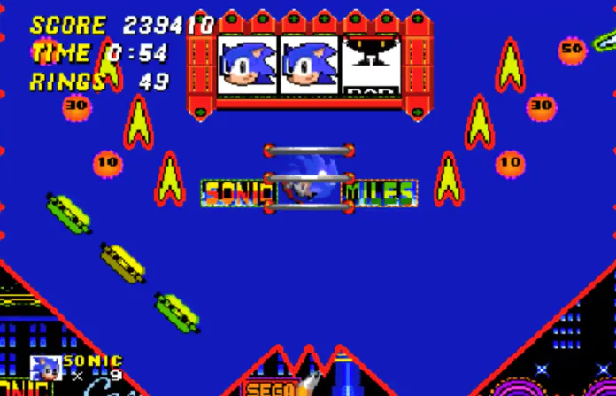
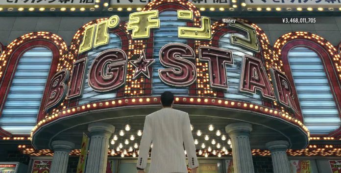
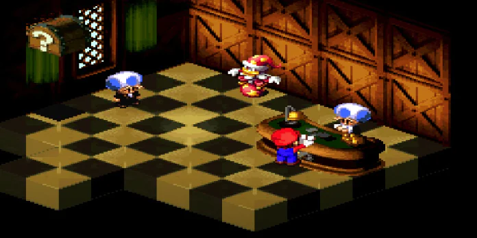
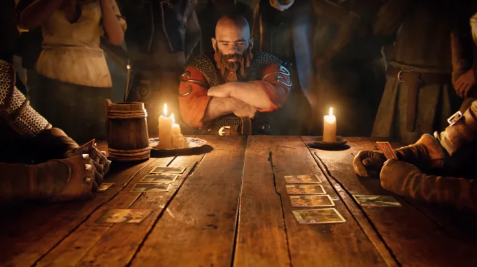
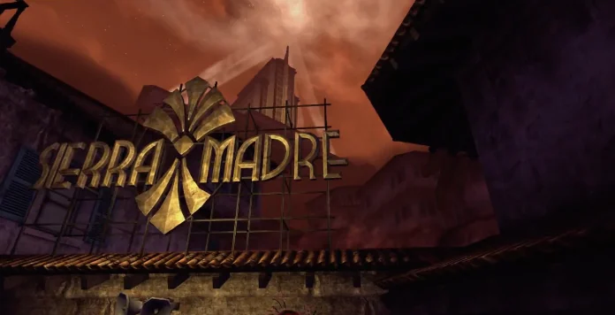
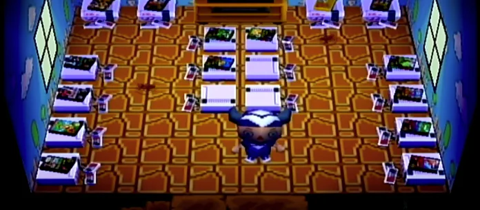

Сейчас слово «игры» ассоциируется у нас не с картами и не шахматами, а с видеоиграми. Почему? Всё просто: популярность этой формы развлечения растёт с каждым годом, и сложно встретить хоть одного человека без любимой игрушки. Впрочем, игры, и в том числе азартные, тоже не забыты, и порой эти два мира пересекаются. Бывает, что протагонисты забегают в казино или забывают о своей миссии, чтобы сыграть в теннис. Сегодня мы вспомним такие вот яркие моменты, когда в одной игре скрывались другие.
Второй «Соник» запомнился нам многим. У кого-то этот легендарный платформер ассоциируется с зелёными полями и индустриальными локациями, но мне в голову сразу приходит Casino Night Zone с её разноцветными огнями и интересными механиками.
Но уровень выделяется не только визуальным рядом, но и наличием тут настоящей слот-машины. Повезёт, и можно заработать дополнительные жизни, а неудача означает потерю драгоценных колец.
Уровень с казино вернулся в Sonic Mania. Нельзя забывать и Casinopolis из Sonic Adventure. Где ещё можно не только поиграть в пинбол, но и побыть самым мячом для него?
Серия Yakuza долгое время оставалась тёмной лошадкой, малознакомой большинству наших игроков. В последнее время это меняется: перестав считаться «японской GTA», серия завоевала даже большее уважение, чем американский аналог, с которым её когда-то сравнивали.
Особенность каждой части серии заключается в том, что протагонисты всегда могут отвлечься от своих миссий, чтобы заскочить в казино, зал игровых автоматов или просто играть в го. Будь то Камуротё или любая другая локация, мест для гэмблинга будет достаточно. Причём речь идёт как об обычных казино (зачастую подпольных и хорошо спрятанных), так и об аркадных залах с автоматами для пачинко и других игр на удачу. И помимо знакомых нам названий вроде блек-джека тут всегда можно найти специфические игры, которые популярны только в Японии и странах азии. Это уже настоящее образование! Yakuza скрывает в себе ну просто головокружительное количество «отвлечений» от непосредственно сюжета, и, в отличие от казино онлайн или оффлайн, рискуете вы только внутриигровой валютой
Читайте также: Обзор Yakuza: Like a Dragon – Преображение легендарной серии
Да, это РПГ по миру Марио. И да, в ней — казино. Всё правда, никаких модов. И это, поверьте мне, не единственный такой секрет из довольно интересной истории легендарного маскота.
Прелесть этого казино заключается не в его наполнении или дизайне (внутри вообще стоит одинокая слот-машина и немногим более), а в том, как сложно его найти. Не все вообще знали, что в Super Mario RPG: Legend of the Seven Stars такое есть! Блек-джек в Марио — шутка ли!
В казино можно попасть через секретный проход в Бобовой долине. В одной из труб в центре долины Марио должен победить Чомп-чомпа и трижды прыгнуть, чтобы появилась невидимая платформа, открывающая путь к казино. Намёки на то, где находится заветное казино, можно услышать от спящего Тоада в таверне. Везёт внимательным!
Читайте также: Обзор Paper Mario: The Origami King — РПГ без элементов РПГ
Я хотел обойтись менее банальными вариантами, но просто невозможно не упомянуть гвинт из третьего «Ведьмака». Впервые эта карточная игра появилась ещё в книгах, но после выхода третьей части РПГ-саги популярность её взлетела до небес.
Это игра с простыми правилами, лёгкая в освоении, но требующая недюжинной смекалки, чтобы преуспеть. Вскоре после выхода третьего «Ведьмака» многие игроки стали «жаловаться» в интернете на то, что давно позабыли сюжет, потому что уже третий день играют только в карты. И это было только начало: когда вышло сюжетное дополнение, оно продавалось в магазине с колодами реальных карт из игры! А потом, когда в студии поняли, что успех игры не сходит на нет, и вовсе вышел отдельный тайтл «ГВИНТ: Ведьмак. Карточная игра», позволившая нам играть друг с другом по сети. Вышла даже другая игра, «Кровная вражда: Ведьмак. Истории», с полноценным сюжетом и элементами РПГ, но где все сражения были карточными. Удивительно долгоиграющая мини-игра, которая уже давно не мини!
Пожалуй, любой, кто играл в дополнение Dead Money к Fallout: New Vegas, запомнил эту локацию надолго. Наверное, потому что в «Сьерра-Мадре» есть всё — слот-машины, мутанты, голограммы, и оружие.
Первый этаж занимают два игорных зала, и в главном зале находится единственный стол для рулетки и игровые автоматы. Здесь же находится торговый автомат «Сьерра-Мадре». Ну а малый игорный зал выделен для игры в крэпс и блек-джек. Протагонист может попробовать свои силы в рулетке, блек-джеке и четырёх «одноруких бандитах» – и заодно квест-другой завершить.
Читайте также: Обзор облачного сервиса GeForce Now (GFN.RU) — Геймерский ПК в каждый дом
После выхода Animal Crossing: New Horizons в мире не осталось ни одного человека, который хотя бы не слышал об этой франшизе. А ведь началось всё очень давно, с N64 в Японии и GameCube в остальном мире. Именно тогда знаменитый симулятор жизни начал своё существование. И пусть его основы остались неизменны, кое-что осталось в прошлом.
Мы уже говорили про мини-игры, но как вам идея того, что в игре могут скрываться настоящие, полноценные игры? И не одна или две, а целый десяток! Именно так и было в оригинальной Animal Crossing, где можно было выиграть, купить или отыскать целый ряд классических игр с приставки NES. Их можно было складировать у себя дома и играть, как в отдельные картриджи. Среди доступных тайтлов были Clu Clu Land, Donkey Kong, Donkey Kong Jr. Math, Excitebike, Wario’s Woods и другие. Можете представить такой фестиваль щедрости в наше время?